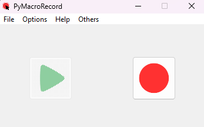

PyMacroRecord
A Completely Free Macro Recorder Software.
Tired of repetitive tasks? Tired of learning difficult macro software, and tired of those "premium" purchases? PyMacroRecord is here for you!
Download for WindowsNot having Windows? Follow this installation!
Free, Forever
Unlike other Macro Recorder Software, PyMacroRecord is completely free to use.
No premium purchase required, all features unlocked.
Features
Easy to use
PyMacroRecorder will make your life easier. You just have a red button to record and a play button to play your record.

Fluid Record
PyMacroRecorder record your mouse and your Keyboard as well.
All this in a fluid way.

Save, Load and Share
With PyMacroRecorder, you can save, load and share with everyone your record.
It is working with .json files, so this is universal.
Repetitions
You can choose as many repetitions as you like, without any restrictions.
Speed
You can change the speed of your records.
From slow to fast.
After Playback Actions
Once the recording is complete, you can add a after playback event, such as shutting down the computer, fully automatically.
About me
Hello, I'm LOUDO, a passionate 18 years old French developer who loves coding. I'm currently studying web development to be a web developer.
You can have a look of my Github Profile.
I wanted to create this software because I see a lot of macro recorders that have a lot of restrictions like repeat limit and to unlock them you have to pay a lot of money monthly or buy a license and some of them are also kinda hard to learn to be honest. So I hope this software will do the job!